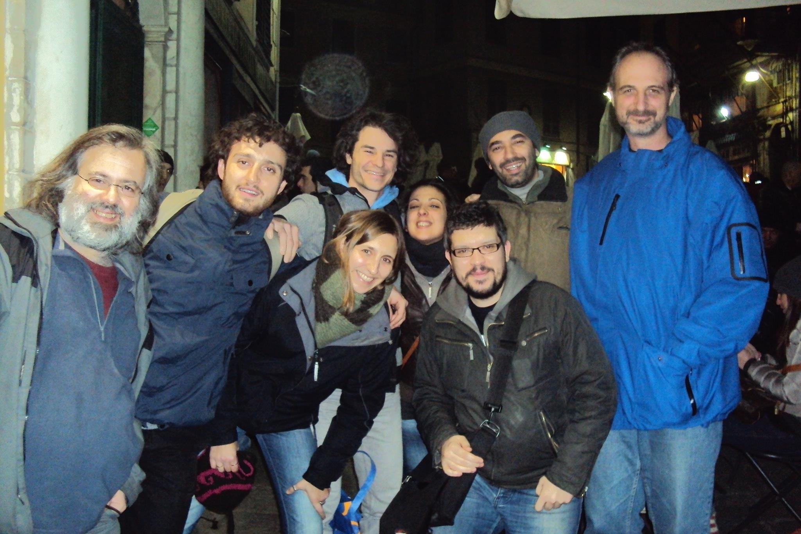
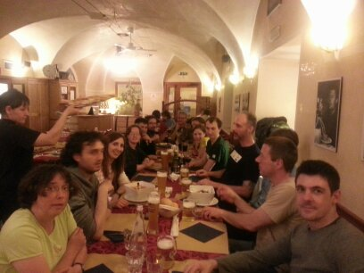
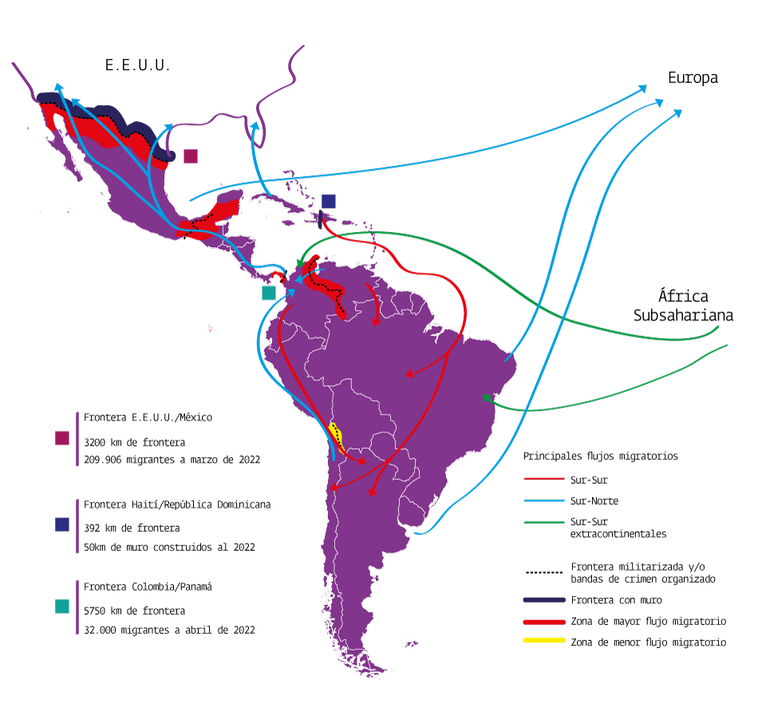
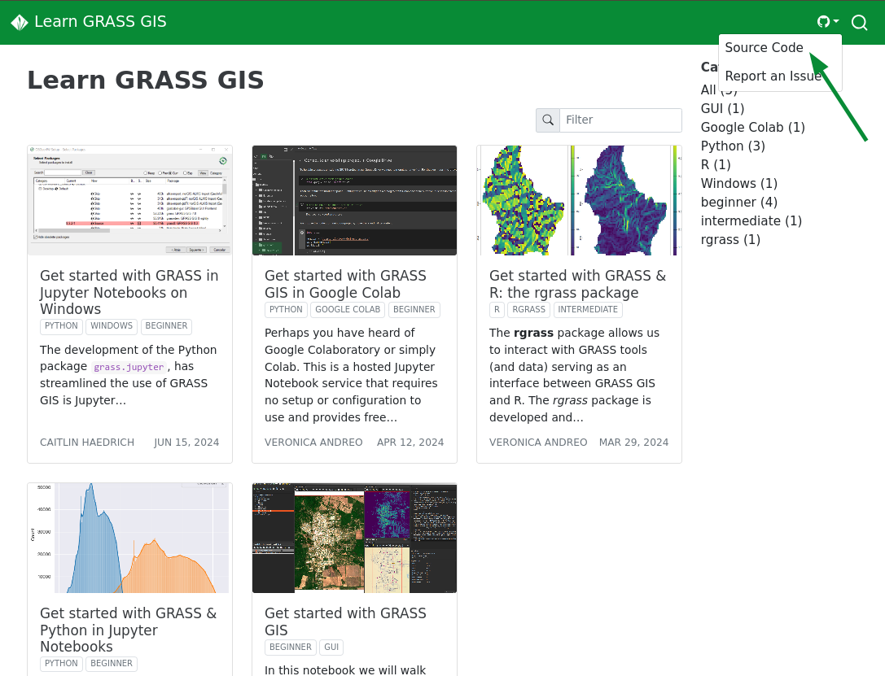
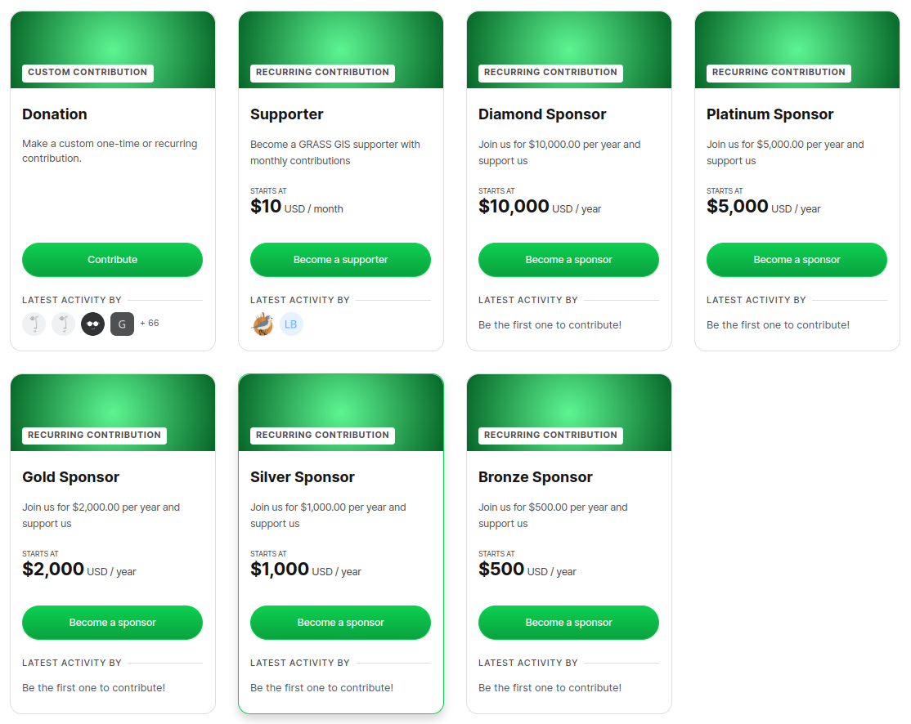

From field biology to the GRASS GIS board
A Journey of Open Source Discovery and Nurturing a New Generation of Contributors
Dr. Verónica Andreo ![]()
CONICET
Instituto Gulich (CONAE-UNC)
2024-11-27
A story of motivation and…

I told you I liked beer!
2013, the internship in Italy
Studying, Asking, Searching… 🍕🍻
- Participated in codesprints, conferences and met several GRASS GIS devs and power users.
- I loved the software, but I was hooked by the community



Why isn’t there more LATAM presence?
- Language barrier even after all the translation tools?
- Much lower % of people graduate from higher education?
- People move to the north searching for better conditions?
- We are historically used to receive “manufactured products”?
- We are simply too far and it is too expensive to travel to most events happening in the north?


Mentoring: one person at a time

Regional and local solutions
- Foster South-South solutions among individuals and organizations
- Organize more small and short sprints and hands-on events that create bonding opportunities and foster inclusion
- Teach workshops and courses with materials in ES or PT
- Leave the comfort zone of only using FOSS, dare to contribute

Learn and share
- There’s not enough teaching material or tutorials? Create them!
 
Financial support


Support your favorite FOSS4G!